Free
powerpoint
Tutorials
|
Free
powerpoint
Tutorials
|
|
 home home |
Stay at Home and Learn | ||||
Format a PowerPoint Master Slide |
|||||
|
Part 1, 2, 3, 4, 5, 6, 7, 8, 9, 10, 11
We can format out Master Slide. That way, when we come to insert more slides into our blank PowerPoint presentation, we're not spending time chaning things like fonts, font sizes, or moving and resizing text boxes.
Formatting the Master TitleTo format the Master Title you started on the previous page, highlight the text that says "Click to edit Master title style". Once you've highlighted all the text (the parts in black in the image above), click Format from the menu bar at the top of PowerPoint. From the Format menu, select Font (you can also right-click the highlighted text, and select Font from the context menu that appears.) 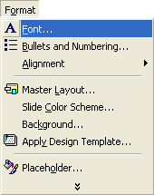 You should now see the Font dialogue box appear. Select Arial for the font, and 44 for the size. Click the colour dropdown list and select the blue colour: 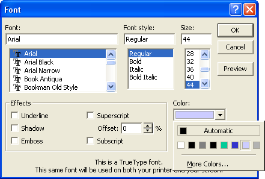 When your Font dialogue box looks like the one above, click OK. Your Master title should now look like this (when you click away):
Format the AutoLayout areaWith the Master title set up, we can format the AutoLayout area (the one with the bullets in it). We only need one slide with bullets in our presentation, so it makes sense to delete these, and just add some text instead. So click indside the AutoLayout area and select all the text: 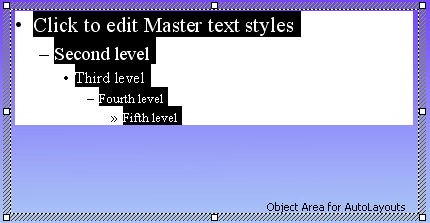 With the text highlighted, locate the bullet tool on the PowerPoint toolbar at the top. (If you can't see this toolbar, click View > Toolbars > Formatting.)
PowerPoint 2000
PowerPoint 2003
In the images above, the bullets are activated. Click this icon to deactivated the bullets: When you deactivate the bullets, your AutoLayout area should look like this: 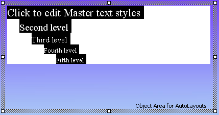 Press the delete key on your keyboard to get rid of this text, and type out a word or two of default text in its place: 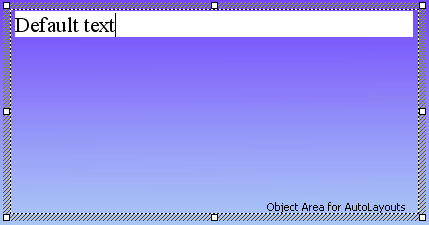 Format the text like you did for the Master title. Choose Arial again for the font, and make the size 16. Leave it on black for the colour:
Resize and Move the AutoLayout AreaWe can move the AutoLayout area into a default position, and change its size. That way, we won't have to keep moving and resizing it. So right click anywhere on the shaded edges of the AutoLayout box, and select Format Placeholder from the menu that appears: 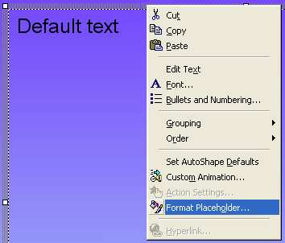 You should then see a dialogue box appear. Click on the Size tab: 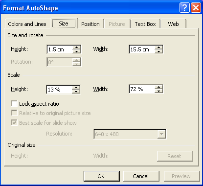 Change the Height to 1.5 cm and the Width to 15.5 cm. Then click on the Position tab: 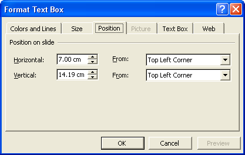 The Vertical one is the most important position for us. This means how far down the page you want the text box. Enter 14.19 cm, as in the image above, and Top Left Corner. For the Horizontal, enter 7.00 cm, and Top Left Corner. Click OK when you're done. Your Master Slide will then look like this: 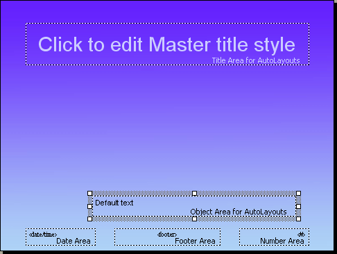
Format the FooterYou can also enter defaults in the Footer area. Click on the word Footer, as in the image below: 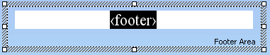 Then type the text you want to appear on every slide. Or just leave it, if you want this area blank. Leave the Date Area and Number Area as they are. Here's our footer now: Again, we've chosen Arial for the font. The size is 12, and the colour is white.
To see what effect this all has, locate the following small dialogue box on your screen: PowerPoint 2000 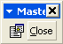
PowerPoint 2003 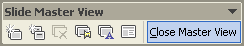
Click the Close button, and you'll be returned to the main PowerPoint window. (If you can't see the Close button, click View from the menu bar. Then select Toolbars > Master.) When you get back to the main PowerPoint window, you should see a slide like this one: 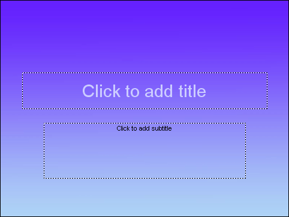 That's not our Master slide. This is the Title slide. To see the slide you've just set up, click Insert from the PowerPoint menu bar. From the Insert menu, select New Slide. When you click New Slide, you'll see this dialogue box appear in PowerPoint 2000: 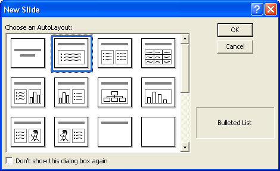 The slide you've just set up is the second one - Bulleted list. Select this, and click OK to see your what your new slide looks like. If you have PowerPoint 2003, Clicking Insert > New Slide will automatically insert the Bulleted List slide as the default.
But now that we have a Master Slide template, we can create the rest of the slide show. Save your work, and you can move on to the second presentation.
|
||||